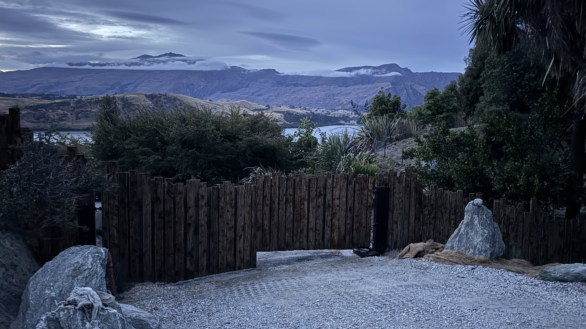
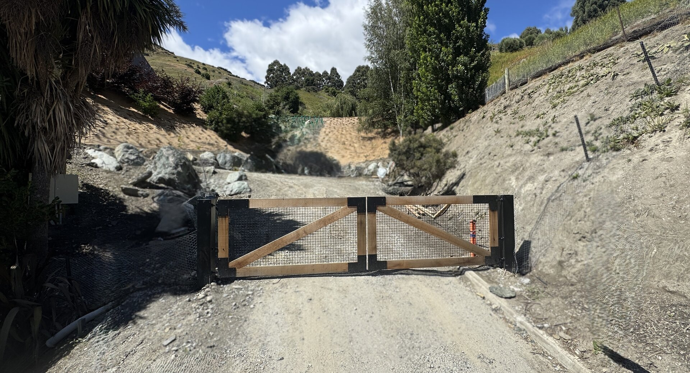
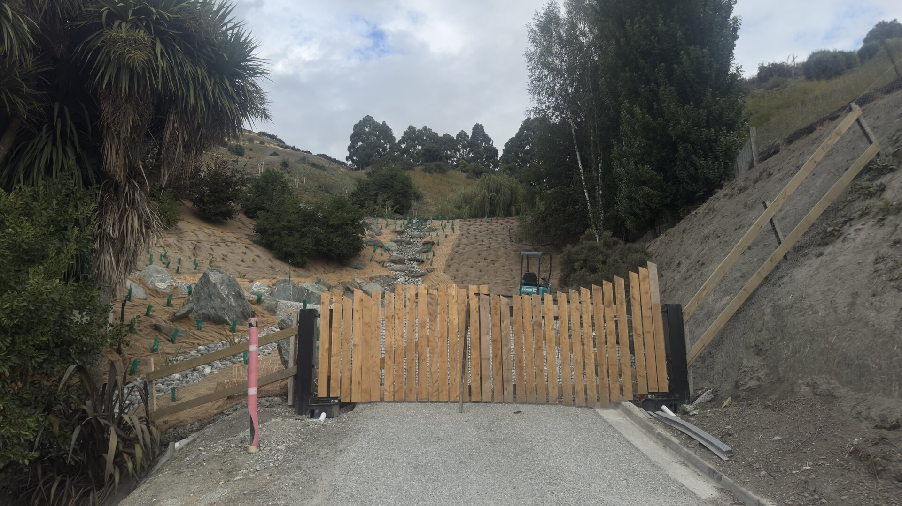
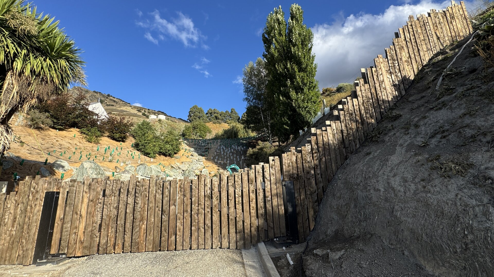

N° 03 · Commission
The Threshold.
The existing gates arrived before the house did.
01 · Before
A gate that announced.
The client wanted an entrance that withheld. An arrival wrapped in sequence, not scenery. The existing gates did the opposite — expensive, automated, see-through. They announced when they should have concealed.
A gate that displayed the property when it should have withheld it.

The original gates — built by another contractor, removed from the brief by their presence.
No demolition.
No argument.
02 · Re-clad
Re-clad over what was there.
Aged timber palings fitted over the existing automated structure. Heights varied with intention — a screen, not a fence. Rhythm without repetition.
The mechanism stays. The announcement disappears.

In progress — palings fitted over the existing mechanism, heights varied with intention.
03 · Arrival
A threshold that withholds.
Daylight on aged timber. The gates close behind. Beyond them, the drive curves upward through the property. The land reveals itself gradually. The house appears when it is ready to appear.

Beyond the gates, the drive curves upward through the property. The house reveals itself in its own time.
04 · Standing
What was already there.
The same site. The same mechanism. A new presence at the entrance.
The work didn't add anything to the property — it removed something that was getting in the way of what was already there.
Completed — evening. Beyond the gates, the drive curves up through the property.